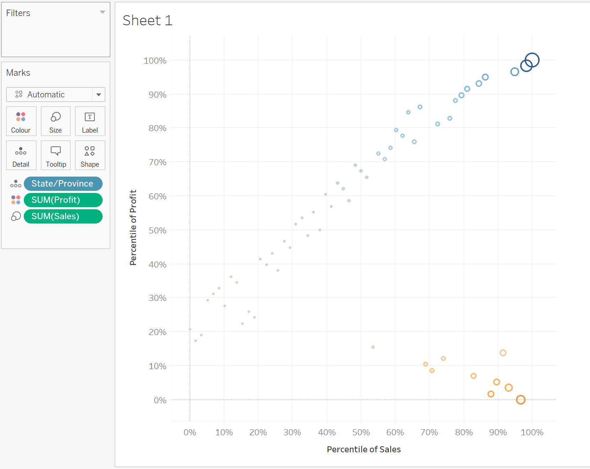

In-Class Ex 3
In Class Ex 3 - Using Tableu
1. Drawing a scatterplot
- can futher use the quick table calculation to spread the data
2. Changing to a Bubbleplot
Drop the variables into the “Marks” field
Select Size for Sum(Sales)
Select Colour Sum(Profit)

Change the shape to circle - then it will be fill circles
The colors can also be further adjusted - together with the range
Using annotate area to annotate the four quadrants:
Creating filter interactivity - expose the interface for the filters (checkbox)
Adjusting the title of the graph - click on the insert button (to select the fields to show)
3. Creating a Custom Tooltip
Create a second worksheet
use of dual-axis (select from the row button)
adjust the color range (to be red for below 0, and blue for above 0)
add in the sum(profit) into the color - then adjust the color range
Use the edit tooltip on the first worksheet, click the insert button to insert from worksheet 2
4. Profit Loss Dashboard
5. Creating animation from time
Instead of dropping the Order_Date into filter -> drop them into pages
It will show the animation pane on the right hand side.
Next we adjust the timeframe to show by quarters instead.
6. Creating Coordinated Link View
Create the graphs to show in Tableu
- Here we are using the Maths and Science data from Exam_Data
Then we will use the “Actions” under Dashboard menu item to create this.
- Need to use ID under the scatterplot to sort of link the data up together